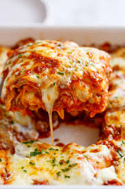

Recipes

Lasagna from down under
This is a recipe to make a delicious lasagne! Brought to you by Dingo Dollars himself.
Ingredients
- ½ pound ground pork
- ½ pound lean ground beef
- ½ cup minced onion
- 1 (28 ounce) can crushed tomatoes
- 1 (8 ounce) can tomato sauce
- 2 tablespoons chopped fresh parsley, divided
- 1 clove garlic, crushed
- 1 ½ teaspoons dried basil
- 1 ½ teaspoons salt
- ½ teaspoon dried oregano
- ⅛ teaspoon white sugar
- 1 (16 ounce) package lasagna noodles
- 1 pound small-curd cottage cheese
- ¾ cup grated Parmesan cheese
- 3 large eggs
- 2 teaspoons salt
- ¼ teaspoon ground black pepper
- 1 (16 ounce) package shredded mozzarella cheese
Steps
- Combine pork and ground beef in a large, deep skillet over medium-high heat; cook and stir until browned and crumbly, 5 to 7 minutes. Add onion and cook until translucent, about 5 minutes.
- Stir in crushed tomatoes, tomato sauce, 1 tablespoon fresh parsley, garlic, basil, salt, oregano, and sugar. Reduce heat to medium-low and simmer, stirring occasionally, for 30 minutes.
- While the sauce is simmering, bring a large pot of lightly salted water to a boil. Cook lasagna noodles in the boiling water, stirring occasionally, until tender yet firm to the bite, 8 to 10 minutes. Drain and set aside.
- While the noodles are cooking, preheat the oven to 375 degrees F (190 degrees C).
- Mix cottage cheese, Parmesan cheese, eggs, remaining 1 tablespoon fresh parsley, salt, and pepper in a large bowl until combined.
- Assemble lasagna: Spread a spoon or two of sauce over the bottom of a 9x13-inch baking dish just to to coat it. Place two layers of noodles over the sauce to cover.
- Layer with 1/2 of the cheese mixture, 1/2 of the remaining sauce, and 1/2 of the mozzarella cheese. Repeat layers once more using the remaining noodles, cheese mixture, sauce, and mozzarella. Cover the baking dish with aluminum foil.
- Bake in the preheated oven for 30 to 40 minutes. Remove the foil and bake until cheese is golden brown, 5 to 10 more minutes.
- Remove from the oven and let stand for 10 minutes before cutting and serving.
Cheesecake recipe
recipe for a lovely, creamy cheesecake!
Ingredients
- 1 tablespoon softened butter
- 3 tablespoons crumbs from Famous Chocolate Wafers, graham crackers or ginger snaps, OR
- 1 (3 ounce) package soft ladyfingers (24 total) left whole, but trimmed to fit pan (Optional)
- 3 (8 ounce) packages cream cheese, at room temperature
- 1 cup sugar
- 3 large eggs, at room temperature
- 2 teaspoons vanilla extract
- ¼ cup heavy cream
- ¼ cup sour cream
- Heavy-duty foil for pan
Steps
- Adjust oven rack to middle position, and heat oven to 325 degrees. Brush interior of a 9-inch springform pan with butter. Add crumbs of choice and tilt pan in all directions to evenly coat, or line pan sides with ladyfingers. Tear off two long strips of heavy-duty foil, overlap in a cross pattern, and set the pan in the middle. Bring up sides, crimping around exterior top of the pan and forming a tight seal. Set it in a roasting pan large enough to hold it.
- Beat cream cheese with an electric mixer until smooth. Gradually add sugar and beat on medium speed until fully incorporated. Scrape down bowl sides and beat again until smooth. Add eggs, one at a time, scraping down bowl after each addition to ensure a creamy batter. Slowly beat in vanilla, then cream and sour cream. (Meanwhile, bring tea kettle of water to a boil, then turn off heat.)
- Pour batter into prepared pan. Set the roasting pan on oven rack and pour in enough boiling water to come halfway up the side of the springform pan. Bake until cake perimeter is set but center still jiggles, about 40 minutes (some flavor variations will take longer). Turn off heat and leave oven door ajar; let cheesecake sit in oven so the residual heat continues to cook it, about 30 minutes.
- Remove pan from water; set on a wire rack. Let cool to room temperature. Cover and refrigerate until well-chilled, about 3 hours (can be refrigerated up to 4 days). Run a sharp knife around the edge of the pan, loosen the spring siding and serve.